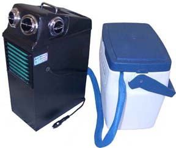
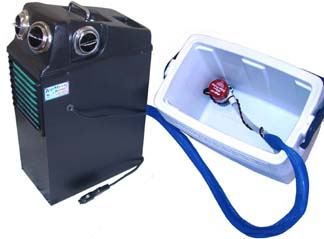
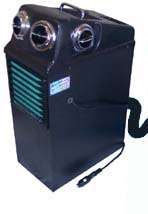

12-Volt
Swampy IceStrMystr Model IM-30
[Home - F.A.Q.
- 12-volt Models - 110-volt Models - Prices]
Works around the
Globe under the most Severe Conditions, even in areas of the Highest
Humidity. Use anywhere you need 12-Volt Air Conditioning.

[Specifications]
For over 100 years different
methods of blowing air through Ice always obtained disappointing
results & no relief from the heat. Ice Chilled Water solved
the mystery of how Ice may be used for cooling relief!
08/08/03: "I just wanted
to let you know that the IM-30 worked like a champ throughout
the long drive between San Diego and Yosemite National Park (actually
Saddlebag Lake, which at 10,200 feet, is above and to the North
of Yosemite). It was a lifesaver during the drive through the
Mojave Desert. Outside air temperatures were probably on the order
of 95-100 degrees Fahrenheit; inside the VW camper, though, we
were enjoying an ambient temperature of about 70 degrees. A 70
quart cooler filled with block ice and water lasted us about seven
hours; ample time before hitting higher altitudes and cooler temps.
I would recommend the IM-30 to anyone with an older vehicle (its
ideal for '60s and '70s VW buses) who doesn't want to retrofit
an air conditioning system that might challenge the engine's power
output, particularly in extremely hot climates. I doubt a '73
Westfalia such as mine could easily climb the Tioga Pass with
a factory-style or retrofit AC system installed. With the IM-30
blowing cool air on the "medium" setting, this was no
problem. Thanks again!" D.E., CA.
How do the Ice
Coolers Work?
The innovative IceStrMystr IM30 combines ice induced
Air Conditioning with the age old art of Evaporative
cooling. The cold water rushes through a special Cooling Core
to produce air-conditioned air instead of merely evaporative cooled
air! You can now choose your own size of cooling container. The
water contained in your Ice Chest is cooled by ice or ice substitutes
like reusable Freeze Packs which are available in many local stores
in most areas.
Another great feature is that you can always get cooler
air from an IceStrMystr than a standard Evaporative Cooler,
even after the ice melts. This is possible because of the two
stage cooling process. A fully charged 105 amp hour deep cycle
battery should last from 8 to 12 hours on low or medium speeds
without charging.
"Just wanted to drop you a line
and let you know how pleased we are with our IceMyster (IM20 which
has the same cooling system as the IM30 IceStrMystr.) We just
finished driving from Seattle to Oklahoma City by way of the Grand
Canyon. As you can imagine it was in the high 80's and low 90's.
Every time we filled with gas or had a meal, we'd just get another
bag of ice! We are very pleased with its performance. We read
the directions and followed them and had no challenges. My kids
were about 12 feet away in the back of our 18.5 ft motor home
and never once complained of the heat. A very nice piece of 12
volt technology! Thanks so much for all the help with my questions
prior to my purchase! Needless to say, we are very happy! As your
website says, it's not an air conditioner but it does a great
job of keeping you cool! Next leg of our journey is St. Louis
to St. Paul to Montana then home. Looking forward to using it
a great deal! Thanks again!" R.L.H. , WA.
"Order received. Thank you for your e-mail. The IM30 works
much better than I expected after reading your literature. I wish
I had picked one up last year. . ." Scott A., NV.

[To see the other 12-volt Swampy Models Click
Here]
As the ice begins to melt the rugged submersible pump lifts
the icy water and pressures it into the cooling systems evaporative
pads. Our first ice air conditioning unit was the Icester which
proved the power of this type of cooling, however the cooling
ceases once the ice melts. Now you have the option of evaporative
cooling alone, like all the other Swampys, or you may utilize
the dual cooling system by selecting to use the ice feature and
have air conditioning combined with evaporative cooling. A powerful
system combining frigid ice water with evaporative cooling adds
up to a great alternative to portable air conditioning.
The IM-30 is baffled like the IM-20, T-304, & T154 to
keep the water from splashing out when used over rough terrain.
The IM-30 evaporative system will cool for two to four hours on
one gallon of water. Incorporating the dual cooling system, by
adding ice, provides a sizable temperature drop from evaporative
cooling alone. If you do not need the cold air ice produces and
the humidity is low, you may wish to accelerate the evaporative
cooling system by utilizing reusable Freeze Packs. It is so easy
to add the Freeze Packs and even your favorite beverage into Your
Ice Chest!
How it works: Block or cube ice is placed in the ice chest
which chills the water. The water is then pumped into a special
chilling core inside the Swampy and also through the evaporative
pads. The blower motor draws ambient air through the evaporative
pads pre-cooling the air before it is drawn through the chilling
core. After the air is cooled it is directed outward to cool the
occupants. The water that has been used plus excess humidity in
the air and not evaporated during this process is then returned
back to the ice chest to complete the cycle.
Our ice models produce a large quantity of Cold Air because they
are capable of consuming up to 20 pounds (7.5 kilos) of ice per
hour! Ice has a vast energy base and the quicker you melt it the
more energy you derive from it in the way of cold air produced.
A 48 quart Ice Chest filled with block ice will last around 4
to 5 hours. The largest Ice Chest you can normally purchase is
150 quart. A 48 quart (45.5 liter) size may be purchased in most
places like Target for $15.00 +-.
Emptying the excess water from the Ice Chest is a breeze
as you remove the return line from your Ice Chest and the secondary
pump inside the IceStrMystr itself pumps the water wherever you
wish.
Specifications
All 12-Volt Swampy Products have Three Speeds &
are
Manufactured from rugged non-corrosive ABS Plastic
|
Model |
|
Dimensions w/d/h
Inches - Centimeters |
Empty
Weight |
Water
Capacity |
Amps@
12v Low |
Amps@
12v Med. |
Amps@
12v High |
T154
Black |
Swampy |
I=6 � x 12 � x
15 �
C=17 x 31.75 x 40.0 |
9.7 lb
4.4 kg |
1 � gallons
5.7 liters |
4.2 |
7.6 |
13.9 |
S154
White |
Swampy |
I=13 � x 11 � x 11 �
C=34.29 x 29.2 x 29.85 |
10.2 lb
4.6 kg |
1 � gallons
5.7 liters |
4.2 |
7.6 |
13.9 |
T304
Black |
Swampy |
I=6
� x 12 � x 21 �
C=17 x 31.75 x 55.25 |
11.0 lb
5.0 kg |
3 gallons
11.4 liters |
4.2 |
7.6 |
13.9 |
AC12
Black |
Icester |
I=6 � x 11� x
11
C=17 x 30 x 28.0 |
13 lb
6.12 kg |
Ice Chest
Any Size |
4.2 |
7.6 |
13.2 |
IM30
Black |
IceStrMystr |
I=6 � x 12 � x 18 �
C=17 x 31.75 x 48.0 |
14.0 lb |
Ice Chest Any Size |
5.2 |
8.9 |
14.5 |
IM20
Black |
IceMystr |
9 x 13 x 22
C=22.9 x 33 x 55.9 |
15.0 lb |
2 gallons
7.57 liters |
4.2 |
7.6 |
13.2 |
MW1
White |
MightyKool |
I=8 x 7� x 7 �
C=20.3 x 19.6 x 18.5 |
3 lb
1.12 kg |
1/2 G/1.9 L Includes Float |
.9 |
1.3 |
1.6 |
VB1
Black |
MightyKool |
I=6 � x 7 � x
6
C=17 x 19 x 15.2 |
3 lb
1.12 kg |
1 � Pint
.75 liters |
.9 |
1.3 |
1.6 |
[Back to the Top of this page]
12-Volt Models are Proudly made in
the USA
[Home - Frequently
Asked Questions - 12-volt Models - 110-volt Models
- Prices]
We personally answer your e-mail
questions typically within a few hours during business hours.
Proudly made in
the USA
[Home - Frequently
Asked Questions - 12-volt Models - 110-volt Models
- Prices]
We personally answer your e-mail
questions typically within a few hours during business hours.
Orders may also be placed at 480-897-1233 or on our Secure Order
Form
[To
Place an Order on our Secure Server Click Here]
[To Place an
Order on our Regular Form Click Here]
S & S Manufacturing - Mesa, Arizona USA
Serving the World with 12 Volt Portable Coolers
since 1989